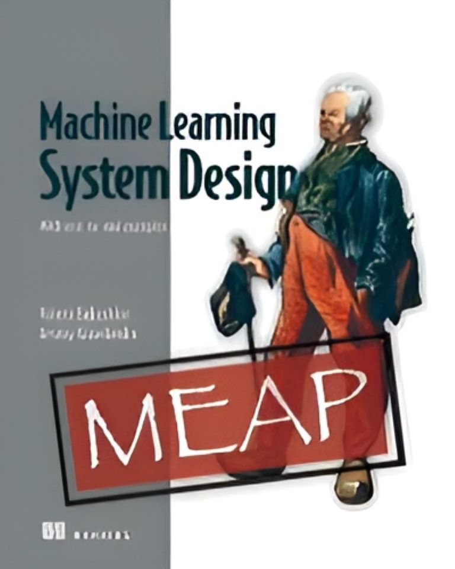

Machine Learning System Design

Το βιβλίο Machine Learning System Design από τις εκδόσεις Manning επικεντρώνεται στον σχεδιασμό και την ανάπτυξη συστημάτων μηχανικής μάθησης. Παρουσιάζει αρχιτεκτονικές πρακτικές, διαχείριση δεδομένων, ανάπτυξη μοντέλων και στρατηγικές κλιμάκωσης, βοηθώντας τους επαγγελματίες να εφαρμόσουν ML λύσεις σε πραγματικά περιβάλλοντα.
- Συγγραφέας/είς: Valerii Babushkin, Arseny Kravchenko
- Εκδότης: Manning
- Σελίδες: 384
- Αξιολόγηση: ★ ★ ★ ★ ☆
- Πλήθος αξιολογήσεων: 9
Περισσότερα για το συγκεκριμένο βιβλίο θα βρείτε ΕΔΩ